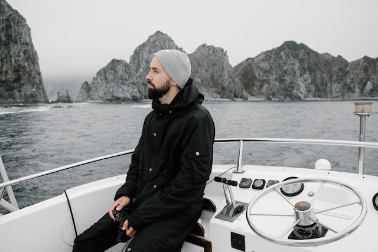

Fondé en 2007 par Popeye, le CNAB n'a cessé d'évoluer au fil des années
En 2022 la grande sortie d'été s'est tenue pour la première fois
En 2023, Popeye lance le programme de formation aux noeuds marin. Page wikipédia à propos des noeuds marins
Retour à l'accueil